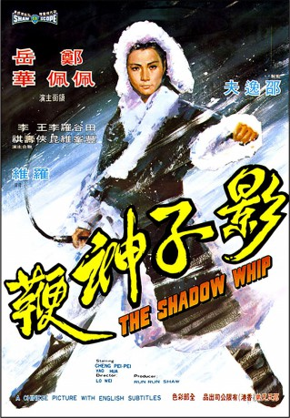

#7241 Im Schatten der tödlichen Peitsche
Alternativ: Ying zi shen bian
 
 IMDB-Wertung: 6.6 / 10
IMDB-Wertung: 6.6 / 10  Metascore: 0
Metascore: 0 
This top ten hit reunites Come Drink With Me's stars for a new adventure. Whether single-handedly fighting sixteen bandits, avenging her father's death, or solving multiple murders, our heroine shows why she's Hong Kong's number one sword - and whip - woman!
Jahr: 1971
Dauer: 76 Minuten
FSK: 16
Land: Hong-Kong Studio: Lighthouse Home EntertainmentTonspuren:
Untertitel:
Auflösung: 1080p (1920x816) Größe: 5591 MB
Genre: Action, Drama
Regisseur: Wei Lo
Drehbuch: Wei Lo
Soundtrack:
Darsteller:
Datei: X:\HD-Eastern-Classic(A-M)\Im Schatten der tödlichen Peitsche (1971, FSK16, 1920x816).mkv seit 09.10.2017
Festplatte: HD Eastern+Western
 Es gibt insgesamt 63 Filme in der Gruppe 'HD-Eastern-Classic(A-M)'
Es gibt insgesamt 63 Filme in der Gruppe 'HD-Eastern-Classic(A-M)'